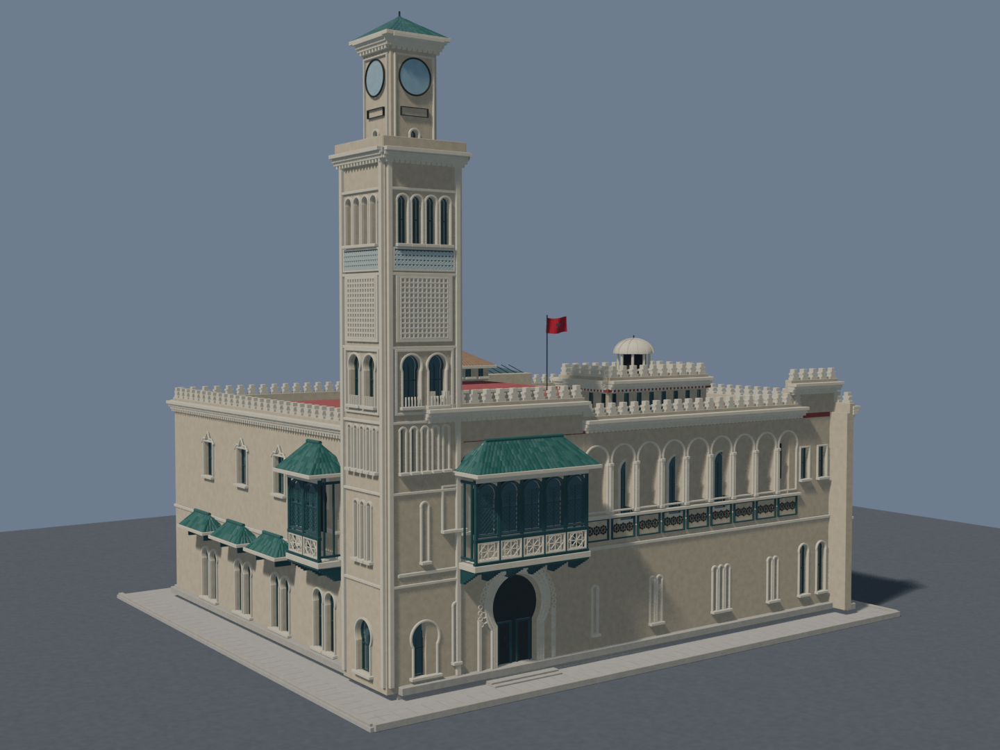

HISTORIA DE LARACHE EN FOTOS
Visite guidée 3D de la Comandancia
Comandancia General · Larache · Maroc

Un monument, huit étapes
Le modèle se charge uniquement à votre demande.
RECONSTITUTION 3D8 repères
Faites glisser pour tourner · Pincez pour zoomer
Positionner les points d’intérêt
Double-cliquez sur une surface du modèle. Copiez la position et la normale glTF dans hotspots.json. Ce mode s’active avec ?edit=1.
Sélectionnez une surface…